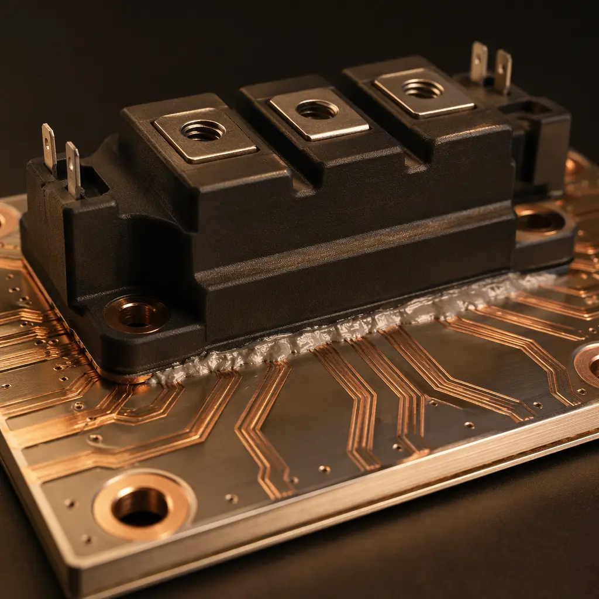
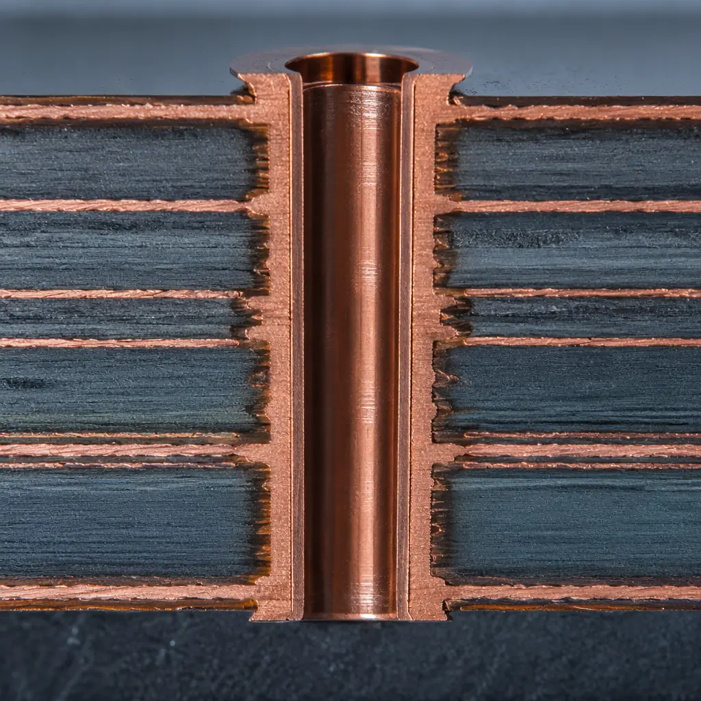
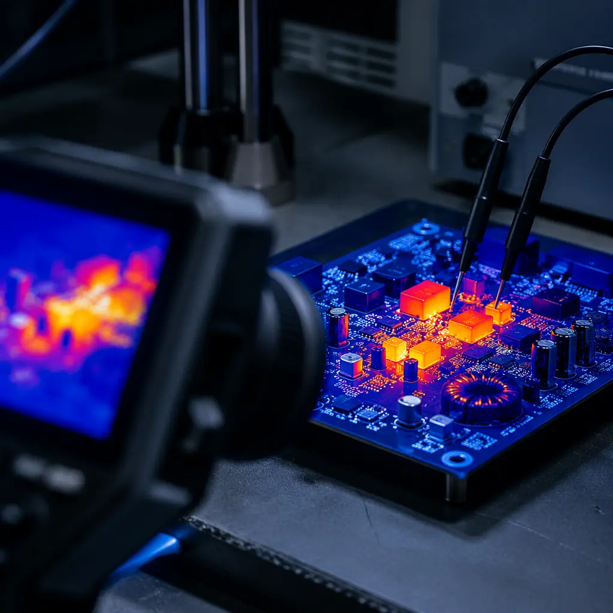

84|
84| Every EV charger, solar inverter, and industrial motor drive on the market today depends on one component that rarely gets the attention it deserves: the power electronics PCB. This isn't a standard FR-4 board running 3.3V logic signals. Power PCBs carry 50 to 200 amps through copper planes, dissipate hundreds of watts of heat, and must survive thermal cycling from -40°C to 150°C for a decade — all while maintaining dielectric integrity at 1,000V or more.
102| 103|At Huaxing PCBA, we manufacture power electronics PCBs across 8 SMT lines with copper weights up to 6oz and substrates including aluminum IMS, ceramic (Al₂O₃/AlN), and high-Tg FR-4 rated to 180°C. Our IATF 16949-certified facility processes over 800 million solder joints daily, and power electronics represent one of our fastest-growing segments — driven by global electrification across automotive, industrial, and renewable energy markets.
104| 105|
106| 107| 108|Thermal Management: The Defining Challenge of Power Electronics PCBs
109| 110|A standard PCB dissipates heat through convection and radiation from its surface — adequate for logic boards pulling 5W. A power electronics PCB handling 500W or more needs a fundamentally different approach. The failure mode is well understood: every 10°C rise in junction temperature halves the expected lifetime of power semiconductors. Your substrate choice, copper weight, and via strategy don't just affect performance — they determine whether the board survives year three.
111| 112|Insulated Metal Substrate (IMS / Aluminum-Core PCB)
116|IMS bonds the copper circuit layer directly to an aluminum or copper base plate through a thin dielectric layer (typically 75-150μm). This eliminates the thermal bottleneck of FR-4 and achieves thermal conductivity of 1.0-3.0 W/m·K — roughly 5-10× better than standard FR-4 (0.25 W/m·K). For LED drivers, DC-DC converters, and single-layer power modules, IMS is the cost-effective default. See our metal-core PCB guide for substrate selection by power level.
117|Heavy Copper with Thermal Via Arrays
124|For multilayer designs where IMS isn't practical (signal layers + power planes in one stackup), heavy copper — 4oz to 6oz on outer layers, 2oz to 4oz on inner planes — paired with dense thermal via arrays is the standard solution. Thermal vias (plated through-holes filled with conductive epoxy or left unfilled) create vertical heat paths from hot components to a heatsink on the opposite side. A single 0.3mm filled thermal via conducts roughly 0.25 W/K; a 10×10 array under a TO-247 package can move 25W directly to the heatsink. Our heavy copper PCB manufacturing guide covers the trade-offs between copper weight, etch resolution, and cost.
125|Ceramic Substrates for Extreme Environments
132|Alumina (Al₂O₃, 96%) and aluminum nitride (AlN) substrates deliver thermal conductivity of 24 W/m·K and 170 W/m·K respectively — orders of magnitude beyond any organic laminate. Ceramic PCBs use direct-bonded copper (DBC) or direct-plated copper (DPC) processes to form circuits on the ceramic carrier. They're the standard for SiC MOSFET and GaN HEMT modules in traction inverters, where junction temperatures routinely exceed 175°C. The trade-off: ceramic is brittle, limited to smaller panel sizes (typically 140×190mm max at our facility), and 3-5× the cost of IMS per square inch.
133|Procurement Reality: The substrate decision has the single largest impact on both BOM cost and field reliability. An IMS board that saves $2/unit but fails at 18 months in a solar inverter installation (where replacement labor costs $500+) is not a savings — it's a liability. Always specify substrate type explicitly in your RFQ rather than letting the manufacturer default to FR-4.
138|High-Current Copper Design: Trace Width, Thickness, and Creepage
142| 143|High-current PCB design is a three-way negotiation between copper weight, trace width, and temperature rise. The IPC-2152 standard replaced the older IPC-2221 charts with more accurate models that account for copper plane proximity and multi-layer thermal coupling — but the procurement engineer doesn't need to run the simulation. What you need is the checklist of what to ask for.
144| 145|
146| 147|| Copper Weight | Trace Width for 50A (10°C rise) | Typical Application | Min Etch Resolution |
|---|---|---|---|
| 1oz (35μm) | ~50mm (external) | Signal, logic | 3/3mil |
| 2oz (70μm) | ~25mm | Medium power, POL converters | 4/4mil |
| 4oz (140μm) | ~12mm | DC-DC, motor drives | 6/6mil |
| 6oz (210μm) | ~8mm | Traction inverters, welders | 8/8mil |
| Busbar (2mm+) | N/A — external bar | 200A+ distribution | Mech. assembly |
Two practical rules for procurement specifications: first, always specify both base copper and plated copper — the plating step adds 20-25μm to outer layers, which affects both current capacity and impedance. Second, power traces on inner layers run hotter than outer layers (no direct convection cooling), requiring a 15-20% derating for the same cross-sectional area. When in doubt, run the board at 4oz inner / 6oz outer — the cost delta is under 10% for most designs but the thermal margin is substantial.
157| 158|Creepage and Clearance for High-Voltage Sections
162|Power electronics PCBs frequently operate at 400V (EV bus), 800V (next-gen EV), or 1,000V+ (solar string inverters). IPC-2221 specifies 0.6mm clearance for 100V and 3.2mm for 500V on uncoated external conductors. For 1,000V designs, expect to maintain at least 6mm between high-voltage and low-voltage domains. Conformal coating — which our facility applies in-line after assembly — effectively doubles the withstand voltage for a given spacing. Our conformal coating guide details the coating types and application methods for high-voltage PCBs.
163|Substrate Selection: Matching Materials to Switching Frequency and Voltage
168| 169|The substrate does more than carry heat. At the switching frequencies of modern power semiconductors — 20kHz for IGBTs, 100-500kHz for SiC MOSFETs, and 1MHz+ for GaN HEMTs — the laminate's dielectric constant (Dk), dissipation factor (Df), and comparative tracking index (CTI) become critical design parameters. Choosing the wrong material produces a board that works on the bench but fails EMC compliance testing.
170| 171|| Material | Tg (°C) | Thermal Cond. (W/m·K) | Dk @ 1MHz | CTI (V) | Best For |
|---|---|---|---|---|---|
| Standard FR-4 | 130-140 | 0.25 | 4.5-4.7 | 175-225 | Logic, sub-48V |
| High-Tg FR-4 | 170-180 | 0.3-0.4 | 4.3-4.5 | 200-250 | Industrial drives, 48-400V |
| Aluminum IMS | 130 (dielectric) | 1.0-3.0 | 4.0-6.0 | — | LED, DC-DC, single-layer |
| Rogers 4350B | >280 | 0.69 | 3.48 ±0.05 | >600 | RF power, GaN, 500kHz+ |
| Alumina (96% Al₂O₃) | N/A | 24 | 9.8 | >600 | SiC modules, >400V |
| AlN Ceramic | N/A | 170 | 8.8 | >600 | High-power SiC, >175°C Tj |
For the procurement engineer, two specifications matter most: CTI and Dk stability. A CTI below 200V means the PCB surface can form conductive tracks under contamination and voltage stress — a failure mechanism that takes months to appear in the field. For outdoor applications (solar, EV charging), specify CTI ≥ 400V minimum. Our PCB materials selection guide covers the full substrate landscape with cost comparisons.
182| 183| 184|Manufacturing Quality Control for Power PCBs
185| 186|Power electronics PCB failures are disproportionately expensive. A delamination defect in a consumer router is a warranty return. The same defect in a traction inverter stops a $40,000 vehicle. The manufacturing QC requirements for power PCBs go well beyond standard IPC Class 2 — and procurement engineers should know which tests to specify in their purchase order.
187| 188|
189| 190|High-Pot (HiPot) Dielectric Withstand Testing
194|Every power PCB leaving our facility undergoes hi-pot testing: applying 1,500V DC (or 2× rated voltage + 1,000V) between isolated domains for 60 seconds while measuring leakage current. A board that passes at 500V but arcs at 1,200V has a latent manufacturing defect — incomplete etching between planes, insufficient dielectric thickness, or contamination. For automotive applications (IATF 16949), hi-pot results are archived per serial number for full traceability. Our PCB testing methods overview covers the complete electrical verification workflow.
195|Thermal Cycling and Thermal Shock Testing
202|The most common failure mode in power PCBs is barrel cracking — the copper plating inside vias fractures after repeated thermal expansion cycles. Plated through-holes expand at 17 ppm/°C (copper) while the surrounding FR-4 expands at 14 ppm/°C (XY) and 70 ppm/°C (Z-axis). Over 1,000 cycles from -40°C to +125°C, this CTE mismatch accumulates stress that eventually cracks via barrels. We test production samples to IPC-TM-650 2.6.7.1 (thermal shock) and 2.6.7.3 (thermal cycling), with cross-section analysis at 200× magnification to verify barrel integrity. Boards destined for automotive or renewable energy applications must pass 1,000 cycles with ≤10% resistance change.
203|Partial Discharge Testing for Medium-Voltage Boards
210|Once operating voltages exceed 700V, partial discharge (PD) becomes a real failure mechanism. Tiny voids in the laminate, incomplete resin fill in vias, or sharp copper edges create localized electric field concentrations where corona discharges can initiate. These micro-arcs erode dielectric material slowly — the board might pass initial hi-pot but fail after 6-12 months of continuous operation. For designs above 700V, specify PD testing per IEC 60270 with an inception voltage ≥ 1.5× rated operating voltage. This test requires specialized equipment that not every PCB shop has — confirm your supplier's PD capability before placing the order.
211|Factory Reality: A power PCB that passes electrical test at 25°C can still fail after 6 months in a rooftop solar inverter. The failure isn't in the copper — it's in the dielectric. Always request thermal cycle test reports for the specific stackup you're buying, not a generic qualification report for the material alone. The laminate datasheet tells you material properties; the stackup qualification tells you whether those materials work together under YOUR thermal conditions.
216|How to Specify Power Electronics PCBs: A Procurement Engineer's Checklist
220| 221|Most RFQs for power PCBs are underspecified. The engineer who designed the board knows what they need; the procurement team translating that design into a purchase order often omits the critical parameters that distinguish a qualified supplier from a price-only bidder. Here is the minimum specification set every power PCB RFQ should include.
222| 223|Substrate: material, thickness, copper weight (base + plated), Tg, CTI
227|Don't write "FR-4." Write "High-Tg FR-4, Tg ≥ 170°C, CTI ≥ 400V, 1.6mm thickness, 4oz outer / 2oz inner." The difference between the two specs is the difference between a board that works and a board that works for 10 years.
228|Dielectric withstand voltage: VDC, duration, acceptance criteria
235|Example: "1,500 VDC for 60 seconds between primary and secondary, leakage < 1mA." Without this, the supplier applies whatever voltage their standard QC checklist says — which may be 500V for a board that needs to handle 800V.
236|IPC class: Class 2 vs Class 3 — and what that means for your specific board
243|IPC Class 3 reduces acceptable barrel voids from 10% to 5% of barrel length, mandates 360° wrap plating on vias, and tightens annular ring requirements. For automotive, medical, and aerospace power electronics, Class 3 is the default. See our IPC Class 2 vs Class 3 comparison for the full acceptance criteria differences.
244|Thermal cycle qualification: cycle count, temperature range, acceptance delta-R
251|Example: "500 cycles, -40°C to +125°C, 15-minute dwell, ≤ 10% resistance change per IPC-TM-650 2.6.7.1." For EV traction applications, specify 1,000 cycles minimum.
252|Partial discharge: inception voltage and test standard
259|Required above 700V operating voltage. "PD inception ≥ 1,050 VDC, IEC 60270." Not every supplier has PD test capability — this spec alone filters out shops that can't handle medium-voltage designs.
260|Conformal coating: type, thickness, coverage areas
267|For outdoor and high-humidity applications, coating isn't optional. Specify acrylic (AR), silicone (SR), or parylene (XY) with target thickness (typically 25-75μm for acrylic, 50-200μm for silicone) and masked areas (connectors, test points).
268|Power Electronics PCB Applications Across Industries
273| 274|The power PCB requirements vary significantly by end application. A solar inverter PCB and an EV onboard charger PCB both handle kilowatts — but their failure modes, regulatory requirements, and cost constraints are completely different.
275| 276|EV Chargers and Traction Inverters
280|Operating at 400-800V bus voltage with 100-300A phase currents, these boards use ceramic DBC substrates for the power stage and high-Tg FR-4 for control circuitry — often combined in a single assembly through press-fit or soldered interconnects. IATF 16949 certification is non-negotiable. Our automotive PCB requirements guide covers the full qualification framework, including PPAP Level 3 and IMDS material declarations.
281|Solar Inverters and Energy Storage
288|String inverters (1,000-1,500V DC input, 3-phase AC output) and hybrid inverters with battery connections demand the highest CTI ratings and thick copper (4-6oz). Outdoor installation means conformal coating is mandatory. These boards see the full temperature swing from -30°C winter nights to +70°C enclosure interiors in summer — thermal cycle qualification isn't optional. Our new energy PCB manufacturing guide addresses the specific challenges of photovoltaic and energy storage power electronics.
289|Industrial Motor Drives and Servo Amplifiers
296|Industrial VFDs and servo drives operate at lower voltages (380-480V AC) but face the harshest environments: vibration, conductive dust, and 24/7 duty cycles. Aluminum IMS with heavy copper circuitry is the dominant construction for drives up to 15kW; above that, separate power modules with laminated busbars become more practical than single-board solutions. These boards must pass industrial control PCB qualification with extended burn-in testing — 48 hours at elevated temperature and full load before shipment.
297|Getting Your Power Electronics PCB Project Started
302| 303|Power electronics PCB manufacturing sits at the intersection of materials science, thermal engineering, and precision fabrication. The right supplier doesn't just etch copper and drill holes — they understand the physics of dielectric breakdown, the metallurgy of plated vias under thermal stress, and the statistical quality control needed to deliver zero-field-failure production runs.
304| 305|At Huaxing PCBA, we manufacture power electronics PCBs across the full technology spectrum — from single-sided aluminum IMS for LED drivers to 6-layer heavy copper with Rogers high-frequency laminates for SiC-based traction inverters. Our controlled impedance capability maintains ±5% tolerance for gate drive circuits where picosecond timing margins determine switching loss, and our certifications portfolio covers IATF 16949, ISO 9001, ISO 14001, and UL (E354321) — the full qualification package automotive and industrial OEMs require.
306| 307|Send your Gerber files and stackup requirements to our engineering team for a same-day DFM review. We'll evaluate your design against IPC Class 3 criteria at no charge, identify thermal and manufacturability risks before you commit to production, and return a detailed quotation within 24 hours — including substrate options, copper weight recommendations, and qualification test plans tailored to your application.
308| 309| 347|
348|
347|
348|